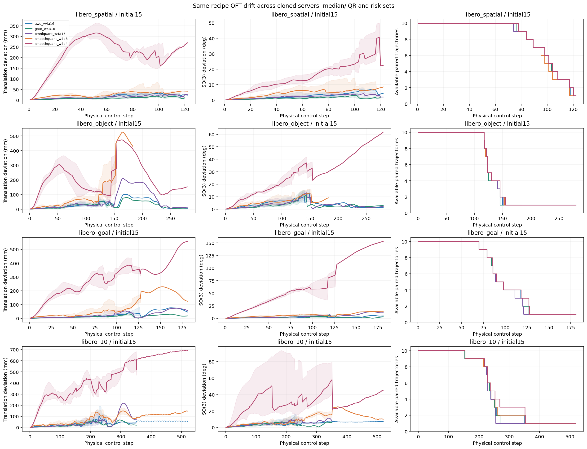
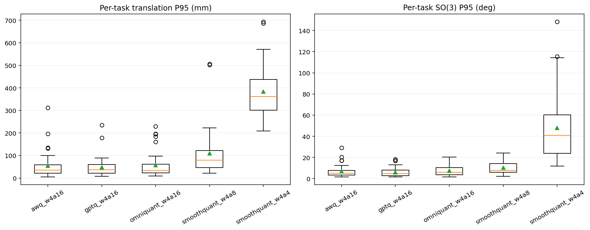
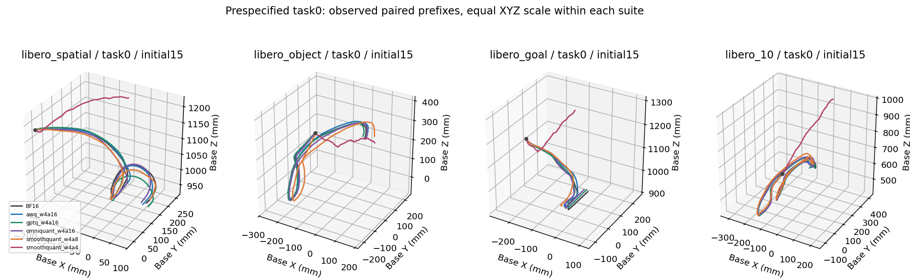
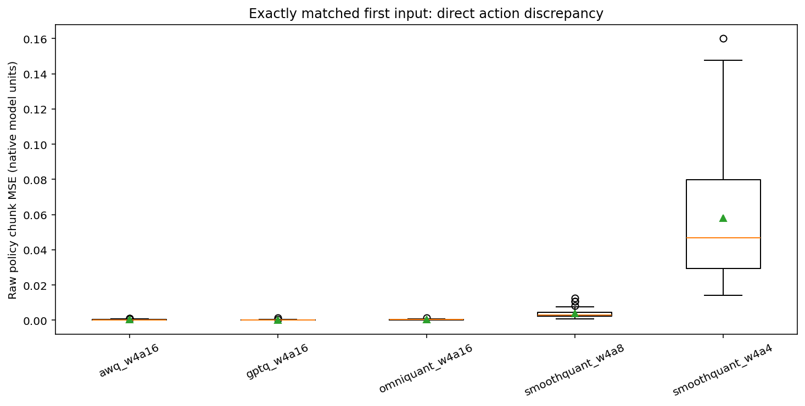
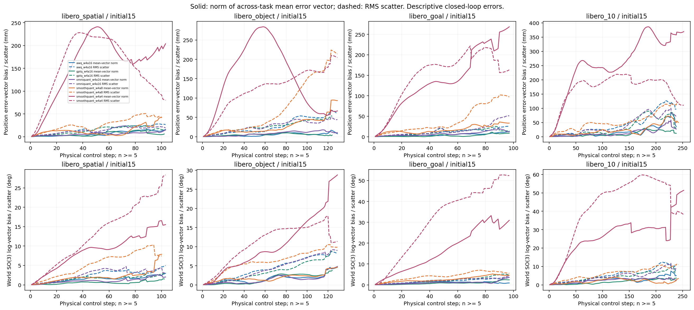

OFT初态15：053→061相同配方接续
实测共同控制步前缀；仅初态15；不补零、不混入未完成槽位，不证明补偿有效。
01-physical-step-drift-and-risk-set

02-task-error-distributions

03-prespecified-task0-3d-paths

04-same-input-first-action-error

Error-vector bias and scatter (n >= 5)
